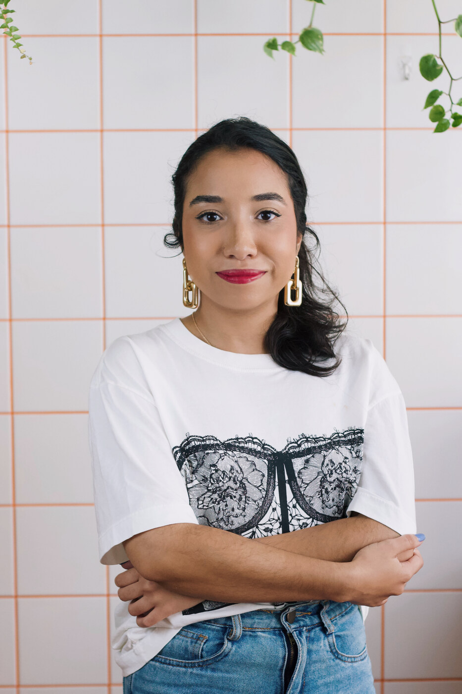
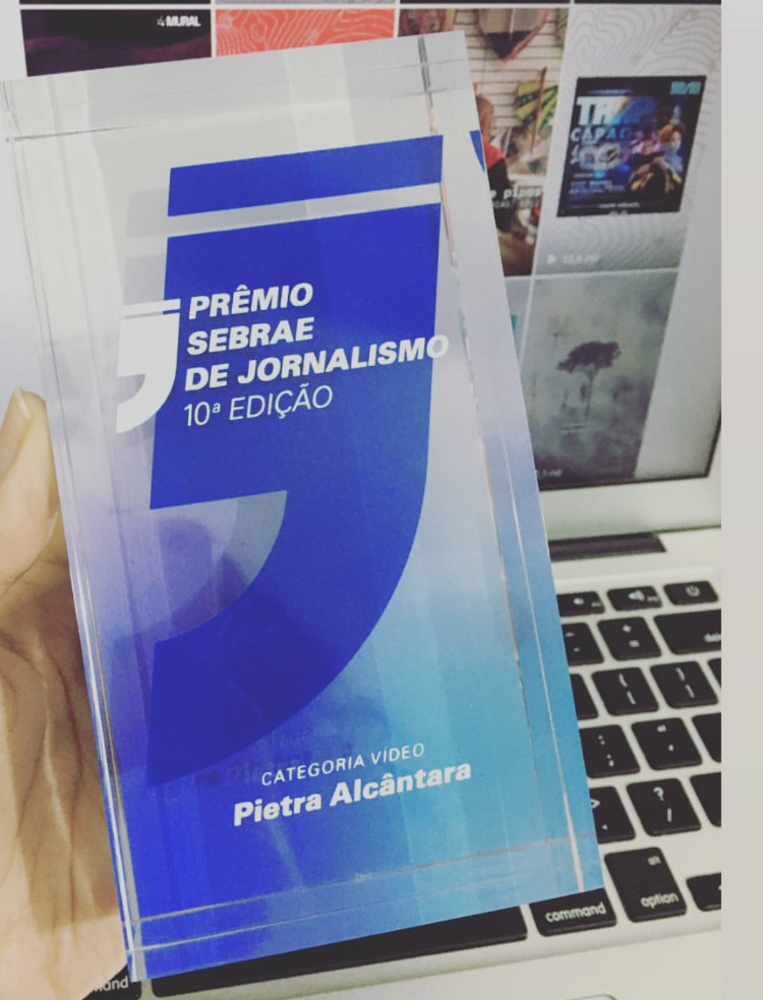

Sprinter automática: a van ficou melhor para quem passa o dia ao volante
Teste em vídeo da Mercedes-Benz Sprinter com câmbio automático de nove marchas.
Ler matéria completa →Portfólio
Jornalista com experiência em redação, redes sociais e vídeos. Também já atuei na área do Marketing de Moda, além de ter passado por agências e trabalho autônomo. Com formação em Jornalismo pela FIAM-FAAM em 2018, tenho quase 10 anos de experiência em comunicação. Aqui reuni meus trabalhos mais importantes.

EXPLORAR
Destaques
01
Bolsa ICFJ Digital Video Masterclass
Formação internacional em vídeo-reportagem digital.
02
Série Crias
Série de vídeos produzida durante passagem pela Agência Mural.
03
Prêmio Sebrae de Jornalismo
Reconhecimento por reportagem premiada.
Redes Sociais
Vídeos
Teste em vídeo da Mercedes-Benz Sprinter com câmbio automático de nove marchas.
Ler matéria completa →Episódio da série Crias, produzida durante a passagem pela Agência Mural, vencedor da 10ª edição do Prêmio Sebrae de Jornalismo na categoria vídeo.

Participação como apresentadora no programa Tá na Rede.
Participação na live Web Estrada, do programa Pé na Estrada (SBT / Trucão Comunicações).